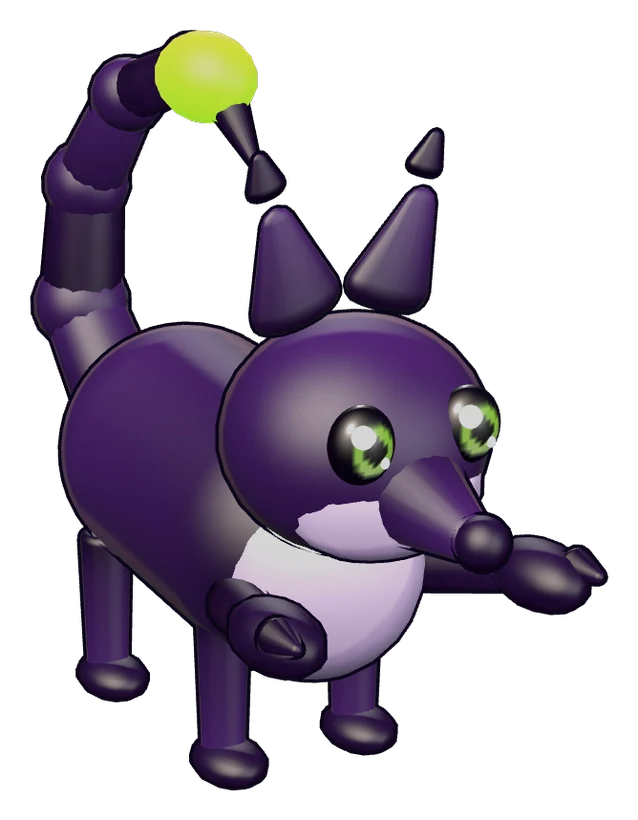

Vespyx, part fox and part scorpion
Ember
- Size
- Small for a Vespyx
- Personality
- Brave, hot-tempered, loyal to a fault
- Markings
- A pale belly and a bright green sting
- Hatched
- On your farm, from an egg found in the Dusk Isles
- Survived
- 23 runs. Taken by another squad in the Hollow, won back two runs later.
- Says
- "Ember." "Home." "Again?"